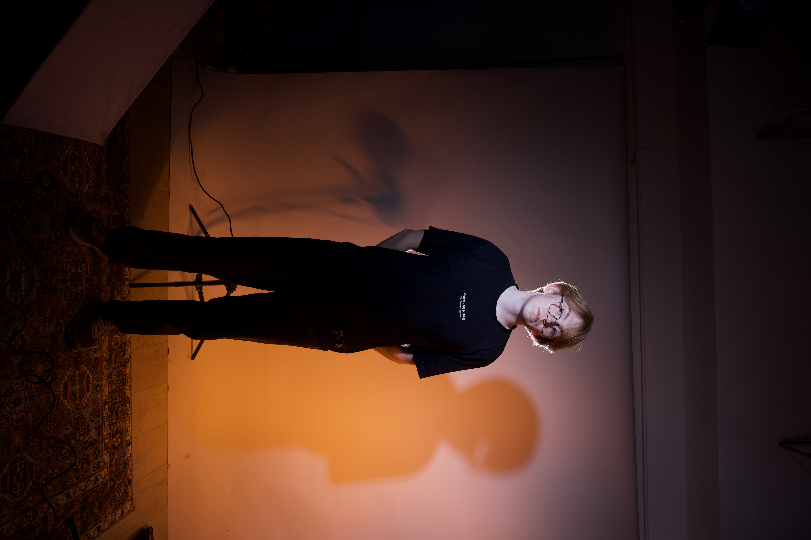
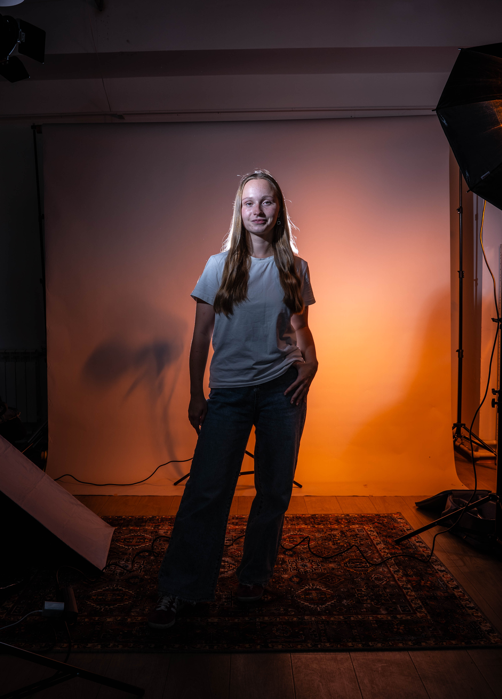

РЕЗЮМЕ
Выберите резюме

Даня Цымляков
Backend Developer

Соня Широкая
Data Analyst
Что мы делаем вместе
Проектирование архитектуры данных
Бэкендер строит надежные пайплайны и API, а аналитик проектирует структуру данных для будущих исследований и моделей.
Внедрение ML-моделей
Аналитик создает и обучает модель, а бэкендер интегрирует ее в продакшн, обеспечивая высокую скорость и доступность.
Создание внутренних дашбордов
Бэкендер обеспечивает стабильную поставку данных в реальном времени, а аналитик создает наглядные и полезные визуализации.
Совместные Pet-Проекты
Web-приложние "Иттер"
Backend: Разработка высокопроизводительного API на Go для отказоустойчивой системы.
Analyst: Анализ поведения пользователей и создание ML-модели (Python, Pandas) для генерации рекомендаций.